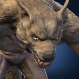

Unit
Fen Mystic
Fen Mystic is a tier 3 caster unit of the Mirefolk, Venomist and Conjurer alliances.
Fen Mystic is a tier 3 (Rare) caster unit. It costs 3 gold in the shop and carries the Mirefolk, Venomist and Conjurer alliances.
Ability
Mire Wards
Plants venomous bog wards that spit at nearby enemies, up to 3 at once.
- Cast
- When mana is full. Casting spends all of it.
- Cast point
- 0.15 seconds from the start of the cast to its effect.
- Summons 2 / 3 / 4 Mire Ward units at its own star level on the nearest free cells (values per star).
Full details are on the Mire Wards ability page. See Mana and casting for how mana is gained.
Stats
| Stat | 1 star | 2 stars | 3 stars |
|---|---|---|---|
| Health | 850 | 1,700 | 4,080 |
| Attack damage | 50 to 60 | 100 to 120 | 240 to 288 |
| Seconds per attack | 1.25 | 1.25 | 1.25 |
| Attacks per second | 0.8 | 0.8 | 0.8 |
| Wind-up before the hit (seconds) | 0.3 | 0.3 | 0.3 |
| Average damage per second | 44 | 88 | 211.2 |
| Attack range (cells) | 3 | 3 | 3 |
| Armour | 5 | 5 | 5 |
| Magic resistance | 0% | 0% | 0% |
| Maximum mana | 70 | 70 | 70 |
| Move speed | 285 | 285 | 285 |
| Seconds to cross one cell | 0.45 | 0.45 | 0.45 |
| Projectile speed (cells per second) | 7 | 7 | 7 |
Seconds per attack is the time from the start of one attack to the start of the next, before any attack speed bonus. Average damage per second is the middle of the damage range divided by the seconds per attack, before armour, bonuses and critical strikes.
Cost, upgrades and selling
3 copies of Fen Mystic at the same star level combine into one copy of the next star level, up to 3 stars. See Star upgrades for how combining works and Gold and income for gold.
| 1 star | 2 stars | 3 stars | |
|---|---|---|---|
| Copies needed | 1 | 3 | 9 |
| Gold to buy those copies | 3 | 9 | 27 |
| Sell value in gold | 3 | 5 | 7 |
| Copies returned to the pool when sold | 1 | 3 | 9 |
The shared pool holds 18 copies of Fen Mystic for all players together, as it does for every tier 3 unit. See The shared pool and The shop.
Alliances
 Mirefolk race
Mirefolk race
Bog-dwellers whose war drums quicken every heart. Mirefolk gain attack speed and other allies gain half as much.
| Units needed | Effect |
|---|---|
| 2 | Mirefolk units: +20% attack speed. At the start of combat, each Mirefolk unit applies War Drums (Mirefolk, 2 units) (+20% attack speed) to all allies (itself included) for the rest of combat. This does not stack: however many units apply it, each target has it once. |
| 4 | Mirefolk units: +30% attack speed. At the start of combat, each Mirefolk unit applies War Drums (Mirefolk, 4 units) (+40% attack speed) to all allies (itself included) for the rest of combat. This does not stack: however many units apply it, each target has it once. |
 Venomist class
Venomist class
Every attack from a Venomist adds a stack of venom to the target. Each stack reduces attack speed by 7.
| Units needed | Effect |
|---|---|
| 3 | When a Venomist unit lands an attack, it applies a stack of Venom (-7% attack speed, stacks up to 99 times) to the unit it hit for the rest of combat. |
Conjurer class
Callers of things from beyond the spire. Every summoned ally deals 20% more damage (40% with four Conjurers). Conjurers share the bonus.
| Units needed | Effect |
|---|---|
| 2 | Conjurer units and the summoned units that carry the Conjurer mark: +20% attack damage. The attack damage bonus is for attacks only: ability damage is not raised. |
| 4 | Conjurer units and the summoned units that carry the Conjurer mark: +40% attack damage. The attack damage bonus is for attacks only: ability damage is not raised. |
How units are counted towards a step is explained under How alliances count.
Fights well with
These units share an alliance with Fen Mystic, so fielding them together works towards the same steps.


Other tier 3 units
The other tier 3 units. They cost the same and share the same tier odds. Within the tier, a unit with more copies left in the pool is offered more often. See The shop and the Unit stat table.
 Ashen Abbess
Ashen Abbess Ashwalker
Ashwalker Briar Shaper
Briar Shaper Cinder Hatchmother
Cinder Hatchmother Clockwork Savant
Clockwork Savant Ember Duelist
Ember Duelist Gnawing Wight
Gnawing Wight Hollow Singer
Hollow Singer Moonless Alpha
Moonless Alpha
Pack WardenSoul Reaper Spire Marksman
Spire Marksman Tidal Stalker
Tidal Stalker